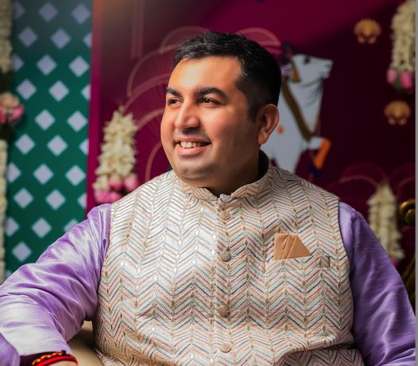
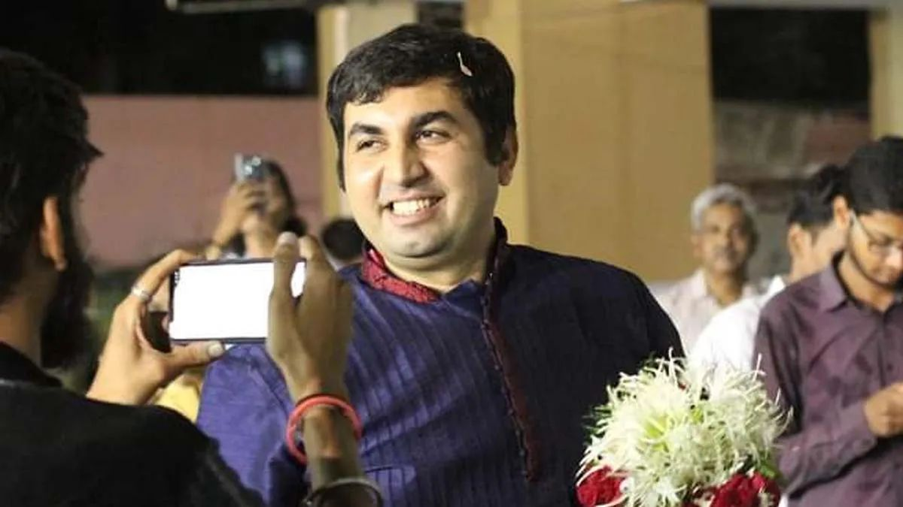

The man they call Jitu Bhaiya.
A teacher, a healer, an elder brother to thousands — and the man behind #SevaTrend and Team Happiness.

Helping souls reach their fullest potential.
Mr. Jitendra Khimlani is a senior Art of Living faculty, motivational speaker, NLP trainer, Bach remedy therapist, intuition trainer and life transformation coach based in Vadodara, Gujarat.
He has been conducting workshops for youth, corporates, children and adults for the past 12 years. Till date more than 2,00,000 people have attended his workshops, sessions and seminars at various universities, institutes, companies and government organisations like the Police, the Army and the NDRF.
He helps young people connect with their true potential by removing doubt and insecurity, instilling self-confidence and the clarity to identify their purpose. He also provides branding ideas and guidance to entrepreneurs and start-ups.

Sometimes, what a person needs most is not advice — but a silent, compassionate listener.— Jitendra Khimlani
Many disciplines. One heart.
Each discipline is a different door into the same room — a calmer mind, a lighter heart and a clearer sense of who you are.
Art of Living Faculty
Senior teacher of the Happiness Program, Sahaj Samadhi Meditation, Youth, Intuition, Utkarsha and Medha Yoga programs.
NLP Trainer
Neuro-Linguistic Programming — rewiring the patterns of thought, language and behaviour that shape our results.
Bach Remedy Therapist
Bach flower remedies and aromatherapy for emotional healing — helping people overcome fear, worry and stress.
Intuition Trainer
Guiding children and teens through the Intuition Process designed by Gurudev Sri Sri Ravi Shankar.
Motivational Speaker
Seminars for universities, institutes, companies, schools, the Police, the Army and the NDRF.
Brand Mentor
Branding ideas and guidance for entrepreneurs and start-ups.

Spreading smiles when the world stood still.
When the whole country was in lockdown and people were living in fear, stress and anxiety, Jitu Bhaiya started "Colors of Life" — an online series on Instagram to spread smiles and keep people motivated.
At the same time, Team Happiness donated handwash to Vadodara's frontline warriors — the Police and Traffic Police — and more than 1,000 food grain kits for daily wage earners.
Follow on Instagram →Milestones of service.
Teaching begins
Workshops for youth, corporates, children and adults across Vadodara and beyond — the start of a journey to two lakh lives.
#SevaTrend — Neki Kar, Social Media Par Daal
A unique revolution conceptualised by Jitu Bhaiya, now inspiring 100,000+ people every year to do more seva.
Colors of Life & Covid relief
The "Colors of Life" online series; 1,000+ food grain kits handed to Vadodara District Collector IAS Shalini Agrawal for daily wage earners; handwash for the Police.
Vadodara floods
200+ Team Happiness volunteers distributed tea, water and food packets in Chhani, Manjalpur, Gotri and around Vadodara Railway Station.
Share It… Dil Se
A judgment-free emotional wellness event with 25 Happiness Coaches, 50+ volunteers and 150+ participants.
Khushiyo Ka Tohfa, shoes & chhas drives
1,000+ Diwali goodie bags in Dediapada, 500+ school shoes and 1,000+ litres of chhas — and Team Happiness keeps growing.
In the media.
Stories about Jitu Bhaiya's work in national publications.
- Hindustan TimesLife transformation coach Jitendra Khimlani calls for giving back to society↗
- Mid-dayJitendra Khimlani — a motivational speaker and life transformation coach↗
- News18 Hindiसमाज में सकारात्मक बदलाव लाने की कोशिश कर रहे हैं जितेंद्र खिमलानी जैसे लोग↗
- Deccan HeraldA unique revolution conceptualised by the Hero for Humanity: Jitu Bhaiya↗
- The StatesmanJitendra Khimlani wants to make a positive contribution in the lives of people↗
- LatestLYBringing positive change via "Colors of Life"↗
- The India Saga"What we give is what we ultimately receive"↗
- Disrupt MagazineThe man behind Colors of Life↗
- Unique NewsJitendra Khimlani is rightly spreading positivity with his inspiring words↗
- Net News LedgerJitendra Khimlani shares his idea of the real essence of celebration this Diwali↗
Bring the energy to your stage.
Seminars and workshops for universities, schools, companies and institutions.
Enquire on WhatsApp →